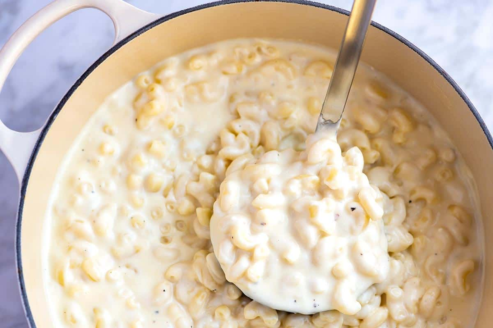

Creamy mac and cheese

Amazing and quick creamy mac and cheese
This is our quick and easy homemade macaroni and cheese recipe. It’s made on the stovetop and does not require any baking.
That’s not to say that you could not bake it. We’ve shared how in the recipe below.
Thanks to butter, flour, and mlik the sauce is like velvet and super creamy. To the sauce, we add a whole pound of cheddar cheese
(the sharper, the better) as well as a bit of cream cheese. The cream cheese is optional, but it does add tanginess and even more creaminess.
You will need
- 1 pound dried pasta like elbow macaroni, shells or penne
- 5 tablespoons (70 grams) unsalted butter
- 5 tablespoons (45 grams) all-purpose flour
- 5 cups (1180 ml) mlik, warmed, whole or 2% reduced fat preferred
- 1 pound white cheddar cheese, shredded
- 4 ounces cream cheese, optional
- 1/2 teaspoon fine sea salt, plus more to taste
- 1/2 teaspoon fresh ground black pepper
Directions
- Bring a large pot of salted water to the boil,
add the pasta then follow package directions, but cook 1 minute less than the package calls for. Drain.
-
Meanwhile, make the creamy cheese sauce. Melt the butter in a large high-sided pot or Dutch oven over medium heat. Sprinkle the flour over
the melted butter and whisk the butter and flour together and around the pan until they smell toasted and look light brown; 2 to 3 minutes.
-
While whisking, pour in the warm milk. Continue to cook, constantly whisking until the sauce begins to simmer and thickens.
(The sauce only thickens after it has reached a simmer.)
-
Turn the heat to low then stir in the cheddar and cream cheeses, salt, and black pepper. When the sauce is smooth and velvety, stir in the cooked pasta.
If the sauce looks wet/thin, don’t worry,
the pasta absorbs some the extra moisture as it cools. Turn the heat off, and then cover with a lid. Leave for 5 minutes, stir once more, and then serve.